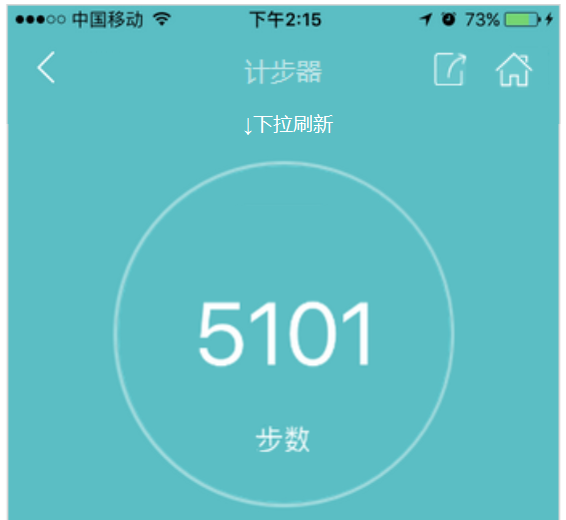
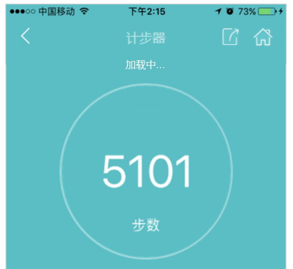
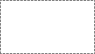

数据来源：小米手环
记录时间 2017-04-07 10:00

数据来源：bong手环
记录时间 2017-04-07 10:00

【计步器页面】
• 页面数据包括：步数、距离、楼层、能耗
• 每次进入计步器页面，刷新获取当前数据源的最新数据；
• 页面支持下拉刷新：
1）下拉时页面下移，提示“下拉刷新”；
2）松手时进行数据的获取，提示“加载中”，
3）获取数据成功后，更新页面数据，页面上移恢复到原来位置；
• 获取最新数据失败时，保持原数据不变，页面上移恢复到原来位置，tosat提示“获取数据失败！”，1s后消失；
• 若有数据为空，用“--”代替；
数据来源：显示当前数据源
iPhone计步器 /Android计步器

情况1-1：手机有计步器功能
记录时间 2017-04-07 10:00
数据来源：iPhone计步器
记录时间 2017-04-07 10:00
选择运动数据来源>>
--
情况1：当前数据源为手机计步器
情况1-2：手机没有计步器功能
--
--
--
记录时间：最近一次更新数据的时间，精确到 年-月-日 时-分，当前设备当天的数据从未获取成功则为“--”
选择运动数据来源>>：按钮，点击进入我的设备页面（2 我的设备-情况2）
情况2：当前数据源为BONG手环
情况3：当前数据源为小米手环

【计步器页面】
• 页面数据包括：步数、距离、能耗
• 每次进入计步器页面，刷新获取当前数据源的最新数据；
• 页面支持下拉刷新：
1）下拉时页面下移，提示“下拉刷新”；
2）松手时进行数据的获取，提示“加载中”，
3）获取数据成功时，更新页面数据，页面上移恢复到原来位置；
• 获取最新数据失败时，保持原数据不变，判断获取失败的原因：
1）未开启蓝牙连接设备，弹窗提示“请打开蓝牙连接设备！”
2）已开启蓝牙但未连接到设备，弹窗提示“请靠近设备并进行连接！”
3）已正常连接到设备，其他原因获取不到数据，tosat提示“获取数据失败！”,1s后消失；
4）网络异常导致，tosat提示“网络不给力，请检查网络！”，1s后消失；
• 若有数据为空，用“--”代替；
【计步器页面】
• 页面数据包括：步数、距离、能耗
• 每次进入计步器页面，刷新获取当前数据源的最新数据；
• 页面支持下拉刷新：
1）下拉时页面下移，提示“下拉刷新”；
2）松手时进行数据的获取，提示“加载中”，
3）获取数据成功时，更新页面数据，页面上移恢复到原来位置；
• 获取最新数据失败时，保持原数据不变，判断获取失败的原因：
1）网络异常导致，tosat提示“网络不给力，请检查网络！”
2）其他原因获取不到数据，tosat提示“获取数据失败！”
• 若有数据为空，用“--”代替；


数据来源：显示当前数据源
记录时间：最近一次更新数据的时间，
精确到 年-月-日 时-分

数据来源：显示当前数据源
记录时间：最近一次更新数据的时间，
精确到 年-月-日 时-分
取消
请打开蓝牙连接设备！
确定
【取消】：点击隐藏提示框，停留在当前页；
【确定】：点击开启蓝牙，隐藏提示框，开始连接设备并刷新数据；

获取数据时请确保bong在您附近！
确定
【确定】：点击隐藏提示框，开始连接设备并刷新数据；
获取数据失败！
网络不给力，请检查网络！
同 情况1-1 的页面下拉刷新
同 情况1-1 的页面下拉刷新
网络不给力，请检查网络！
获取数据失败！
获取数据失败！
数据均为空时，用“--”代替；
数据均为空时，用“--”代替；
显示：距离、能耗
时长
iPhone计步器展示：距离、楼层、能耗
安卓计步器展示：距离、能耗
原则：可以直接通过手机计步器获取的数据直接展示；不能直接获取的通过平台上的装换公式换算后展示（）

--

数据均为空时，用“--”代替

时长
bong手环提供数据：距离、能耗

小米手环提供数据：距离、能耗

距离
能耗
3.4公里
134千卡

距离
能耗
3.4公里
134千卡
距离
能耗
3.4公里
134千卡
